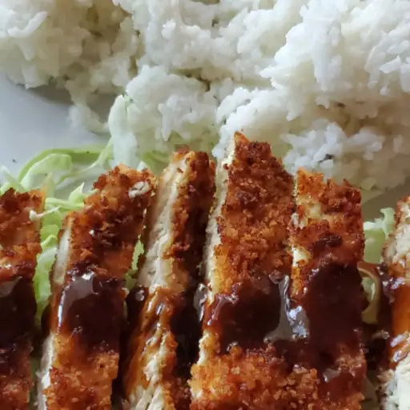

Donkatsu

Description
A recipe for delicious Japanese fried chicken and an accompanying sauce.
Serve with your choice of shredded cabbage, rice, or even mashed potatoes.
Ingredients
Sauce
- ½ cup Worcestershire sauce
- ¼ cup ketchup
- 2 tablespoons soy sauce
- pepper to taste
Chicken
- 2 cups vegetable oil, for deep-fat frying
- ½ cup all-purpose flour
- ½ cup panko bread crumbs
- salt and pepper to taste
- 1 egg, beaten
-
2 skinless, boneless chicken breast halves - pounded to 1/4 inch
thickness
- 1 green onion, thinly sliced
Steps
-
For the sauce, stir together the Worcestershire sauce, ketchup, and soy
sauce, and a pinch of pepper to taste. Set aside.
- Heat oil in deep-fryer to 350 degrees F (175 degrees C).
-
Place flour and panko bread crumbs onto separate plates and season with
salt and pepper. Place the beaten egg in a medium bowl. Dip flattened
chicken pieces first into flour, then egg, and lastly bread crumbs.
-
Fry breaded chicken breasts in preheated oil until golden brown and no
longer pink in center, about 8 minutes. Transfer to a paper towel-lined
plate to absorb excess oil. Slice chicken into thin strips and top with
a drizzle of sauce and a sprinkling of sliced green onions. Serve
remaining sauce on the side for dipping.